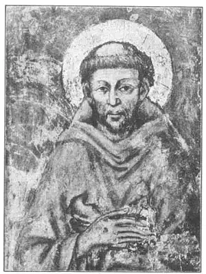
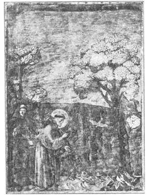

07
THE SHEPHERD BOY PAINTER
牧童画家

PROBABLY you have never seen a great painting. Few people have, unless they have been abroad or have visited some of the largest art galleries in this country. All they have seen are small pictures of such paintings. That is about the same as seeing a picture post card of Niagara Falls instead of seeing the Falls themselves. We know what the Falls look like, so we know what some of the great pictures look like, but that’s not the same as seeing the real thing. So you have to use your imagination to understand what a great picture in color is like, when all you can see is a small black and white copy of it.
The father of Greek painting, you may remember, was a man named Polygnotus. About two thousand years later, there lived a man who is called the father of Italian painting, His name is Cimabue—pronounced Chee-ma-boo’ay. Cimabue lived in Florence, which means the City of Flowers. It is in the central part of Italy. There are very few of his paintings in existence, and we are not sure that certain pictures are really his. And you may not see from the paintings we have why he was supposed to be such a great painter.
If Cimabue were painting now, probably he would not be considered great, but in his time he was thought very great, because he was so much better than any other painter had been for a thousand years before him. When he had finished painting a large picture of the Virgin Mary, it is said the people of Florence thought it so beautiful they formed a procession and, with trumpets sounding and banners flying, carried the picture through the streets from his house to the church where it was placed.
Another picture that Cimabue painted is of a monk, Saint Francis Monks were holy men who spent their whole time in trying to be good and in doing good. Saint Francis started a society of monks called after him, Franciscans. Those who joined the society promised to try to live as Christ had lived. They could own nothing, they could have no money. They could not marry. They spent all their time in doing good. They worked to earn their daily bread and lodging. They shaved the top of their heads, leaving a circular place bare like a bald spot, and kept it shaved so that every one would know they were monks. This shaved circle was called a tonsure. They wore a rough brown robe with a hood, and they held the robe together with a coarse rope tied round the waist.
Before you turn this page, I must warn you not to expect a pretty picture. It isn’t that. Very likely you will exclaim, “What an ugly old man!” The circle round Saint Francis’s head is called a halo. A halo was painted round the heads of saints to show that they were holy persons. The spots on this saint’s hands are not an accident. It is said that Saint Francis wanted so to be like Christ that an angel came to him and made on his hands and feet nail holes like those that Christ had received on the cross. These nail marks are called stigmata.
But it is not for what he did himself that Cimabue is famous. He is known chiefly as the teacher of some one who became a much greater artist. Cimabue was walking one day in the country, not far from Florence, when he came upon a shepherd boy tending his flocks. The boy, while watching his sheep, was drawing pictures of them on a piece of slate with a sharp stone. Cimabue, looking over the boy’s shoulder, was amazed at the picture he saw and he asked the boy his name. “Giotto”, the boy replied, which was the short pet name for Ambrogiotto . (Giotto is pronounced Jotto.)
Cimabue asked Giotto if he wouldn’t like to go to Florence and study drawing and painting. The boy was delighted to have such a chance. So, getting permission from his father, he went to live and study with Cimabue. When Giotto grew up, he painted many famous pictures of Christ, the Virgin Mary, and especially of Saint Francis, whom Cimabue had painted.

No.7-1 SAINT FRANCIS（《圣方济各》） CIMABUE（契马部埃 作）
Saint Francis lived in a town near Florence called Assisi. In Assis there is a church built in his honor. In fact, there are two churches, one on top of the other. In the upper church, Giotto painted along the walls a series of pictures that told stories from the life of Saint Francis. Among many wonderful things Saint Francis used to do was to preach sermons to the birds that gathered round him to listen. The picture below shows him doing this.
In those days, the paint used was not like that we have now. The paint we use is usually made by mixing colored powder with oil (we call it oil paint), and artists paint pictures on canvas. But in those days, oil was not used in making paint, and the painting was not done on canvas. Artists mixed their powdered colors with water and painted on the fresh plastered walls. Or they mixed their colors with something sticky, like egg or glue, and painted on dry plaster, wood, or copper. The first kind of painting on fresh plaster was called fresco, which means fresh. The second kind of painting was called tempera, which means mixed.

No.7-2 SAINT FRANCIS PREACHING TO THE BIRDS（《圣方济各向飞鸟布道》）
GIOTTO（乔托 作）
The story is told that the Pope wished to have a picture painted and sent a messenger to Giotto to ask for a sample of the artist’s work. Giotto dipped his brush in some paint and, with a single swinging stroke, painted a perfect circle on a piece of wood and sent this to the Pope to show how skilled he was. Do you think you could draw a perfect circle without a compass with one stroke of a pencil? Try it. Then try doing it with a brush.
But even if you can do this, it does not mean you are a great artist. It is easy to trace a drawing. It is not much harder to copy a drawing without tracing. Thousands of people can paint a basket of fruit, a vase of flowers, a view of the sea or the land. That is just a copy. Thousands can copy the painting of a great artist so well that you can hardly tell the copy from the original. But very few people are able to invent a picture out of their own heads and put the parts together to make a beautiful painting. That is what takes genius!
【中文阅读】
你可能从没见过名画吧。事实上，难得有人看过，除非出国或参观国内某些最大的美术馆。一般看到的都是名画的小图片。这就有点像看印有尼亚加拉大瀑布的明信片，而不是看真正的大瀑布。我们本来知道瀑布大概是什么样子，所以我们就能大致知道一些了不起的画作是什么样子，但这和看到实物还是不一样的。所以如果你看到的只是一张彩色绘画的黑白图片，那么你就得充分发挥想象力，去想象那幅彩色绘画的真实样子。
你可能还记得“希腊绘画之父”是一个名叫波利格诺托斯的人吧。大约两千年后，有一个人被称作“意大利绘画之父”。他的名字叫契马部埃。他住在佛罗伦萨，意思是“花城”，位于意大利中部。契马部埃的画保存下来很少，再说有些画我们又不敢肯定是不是他画的。而且从他现存的画作中我们可能很难看出为什么我们说他是伟大的画家。
如果契马部埃现在仍在画画，他可能算不上伟大的画家。但在他那个时代，人们认为他很了不起，因为他比之前一千多年来所有的其他画家都要好。当他完成圣母玛利亚的一幅巨画时，据说当时佛罗伦萨的人们认为这画太美了。人们甚至还举行了游行，吹着喇叭，舞动旗帜，穿街过巷，把这幅画从他家一直抬到安放画像的教堂。
契马部埃另一幅画画的是一名圣方济各会修士。圣方济各会修士是一群圣洁的人，他们毕生致力于修身和行善。圣方济各以他的名字创立了一个叫圣方济各会的修士会。所有修士在加入这个组织时，都承诺要像耶稣那样生活。他们不能拥有产业，不能拥有钱财。他们终身不娶，一心行善。他们还必须动手劳动，自己种庄稼，盖房子。他们把顶发剃掉，只留下光秃秃的一块圆形头皮。他们一直保持这种头型，好让 大家一看便知他们是修士。这种剃光头的做法叫做剃度。他们穿着一件褐色的粗布长袍，用一根粗糙的绳子从腰间把长袍系起来。
在翻到下一页之前，我得先作个提醒，不要指望能看到一张漂亮的图画。真的很不好看。你可能会惊叫，“这人真是又老又丑！”画中圣方济各头顶上的圆圈叫做光环。在圣人头上画一道光环以此来表明他们是圣洁的人。圣人手上的小黑点并非意外所致。据说圣方济各非常想成为基督那样的人，于是一位天使来到他身边，在他的手指和脚趾上钉了许多洞，就像基督当初在十字架上被钉一样。这些钉痕叫做“圣痕”。
但这并不是契马部埃成名的原因。他为大家所熟知，主要因为他是另外一位更伟大的画家的导师。一天，契马部埃在离佛罗伦萨不远的乡村散步，无意间看到一个牧童在放羊。这个男孩一边放羊，一边用一块尖石在石板上给羊群画画。契马部埃从男孩的肩上伸头一望，大吃一惊，忙问男孩叫什么名字，“基托，”男孩回答道。基托是安布瑞基托的昵称。
契马部埃问乔托愿不愿意跟他去佛罗伦萨学习素描和绘画。男孩很高兴能有这样的机会。于是，他在得到父亲的允许后，就去跟契马部埃一起生活和学习。乔托长大后，画了许多名画，主要是基督和圣母玛利亚，特别是契马部埃也画过的圣方济各。
圣方济各生活在佛罗伦萨附近一个叫阿西西的小镇上。在阿西西有一座为纪念他而建的教堂。教堂实际上有两层，分为上下两堂。乔托在上堂沿着墙壁绘制了一系列图画，描述了圣方济各的生平故事。圣方济各做过许多了不起的事情，其中有件事就是向围在他身旁聆听的飞鸟布道。下图展示了他布道的情景。
乔托那个时代用的颜料和我们现在用的不同。我们用的颜料通常是色粉和油的混合制品（我们叫做油彩），而且艺术家是在画布上作画。但在那时，画家没有油彩，也不在画布上作画。他们把色粉和水混合在一起，在刚刚刷好的灰泥墙上画画。或者，他们在颜料里掺杂一些像蛋清或胶水一样的黏性物质，然后在干燥的石灰墙、木板或铜片上作画。第一种在刚刷好灰泥的墙上绘制的画叫做“湿壁画”，意思是说这种画是画在潮湿墙壁上的。第二种画叫做“蛋彩画”，意思是说这种画的颜料是混合制成的。
据说，有一次教皇想找人画一幅画，就打发一个使者去见乔托，向他要一幅画作的样本。乔托用画笔蘸了一些颜料，在一块木板上轻挥一笔，画了一个整圆。他让使者把画带给教皇，以展示自己高超的技能。如果不用圆规而只用铅笔，你觉得能一笔画出个整圆吗？试试看吧。然后再用画笔试一下。
然而即使你能做到，也不意味着你就是一个伟大的画家。描摹一幅画很容易。但即使不描摹，看着一个东西临摹出一幅画也难不到哪儿去。成千上万的人都能够画一篮子水果、一瓶鲜花、一幅海景或一处风光。但这只是临摹而已。有许多人能把伟大画家的作品临摹得非常像，使你难辨真伪。然而很少有人能凭自己的头脑创作一幅画，并且还能从局部到整体画出一幅美丽的画。只有做到这一点才能算得上天才！